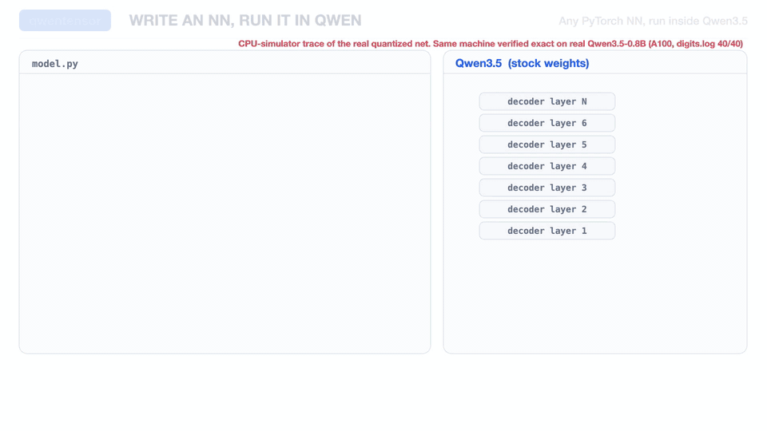
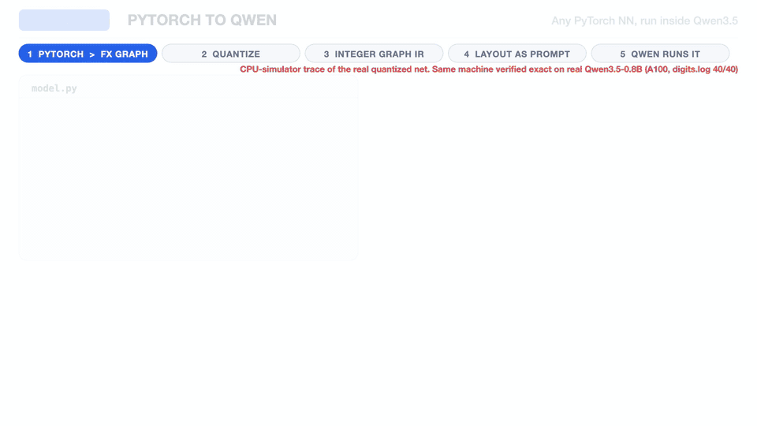

qwentensor quantizes a small PyTorch module to an integer graph and compiles it to a prompt that Qwen3.5 executes, one generated token per neuron. It builds on qwenTPU's in-weights integer machine. It is bit-exact against a numpy reference on a CPU simulator of the circuit, and twelve networks have run bit-exact on Qwen3.5-0.8B on an A100, from small MLPs to a 778-neuron CNN and a 784-wide first layer. Networks larger than one machine run in pages, with the host copying activations between pages.

qwenTPU put a matrix-multiply machine into Qwen3.5. qwentensor changes what you can run on it: not a fixed kernel, but a network you wrote, with the schedule in the prompt.
A fixed matvec. The host drives the array one operation at a time.
A hardcoded chain of matvec and requantize stages. The program varies only in widths and depth.
Any quantized network of the supported ops, written in PyTorch. Successor, destination, column mask and shift of every op are tokens in the prompt.
Five stages. Click one.

import qwentensor as qt
# model: a trained float nn.Module; Xtr, ytr: training samples and labels
prog = qt.compile(model, Xtr, input_shape=(15,), labels=ytr,
qat=dict(epochs=60, lr=0.01), backend="sim") # "qwen" needs a GPU and QWEN_DIR
print(prog.explain())
y = prog.run(Xte) # decoded from the emitted tokens; asserted equal to the numpy reference
The authoritative list is in docs/IR.md. Unsupported ops raise an error at compile time that names the op.
Held-out sklearn digits (540), fixed seeds. "Reference" is the bit-exact numpy interpreter of the integer graph. "pending" means not measured yet. The Real Qwen3.5 column gives exact counts from the logs in results/; paged and wide networks were run on the first 10 held-out digits (CNN: 6), so they show exactness, not accuracy on all 540.